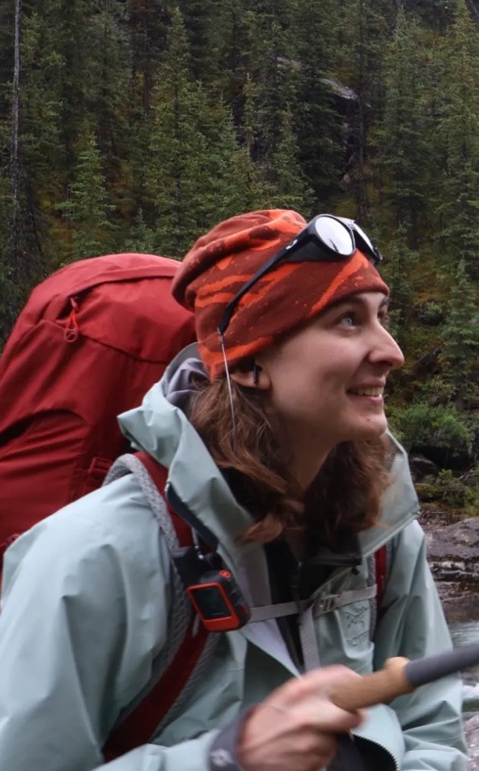

Sam Mockford (he/him)
Founding Director & Outreach
Sam Mockford is a proud dënesųłiné from Black Lake First Nation in Treaty 8 and of Scottish descent. Sam was born and raised in amiskwaciwâskahikan Treaty 6 (Edmonton). For generations, amiskwaciwâskahikan has been a gathering place for all nations to meet, connect, and trade. Many from Treaty 6 have taken Sam in and claim him as one of their own, and being from amiskwaciwâskahikan nêhiyaw ways of being, ways of doing, and lifeways have shaped Sam into seeing the askiy from an Indigenous perspective.
Growing up, Sam discovered snowboarding, which grew his love for the outdoors and the possibilities of being able to play and learn from the land at the same time. Sam worked in outdoor retail for 5 years at Breathe Outdoors, MEC, and Arc’teryx, which grew his love for hiking, backpacking, climbing, trail running, canoeing, and biking. This experience deepened his love for the land; however, as he moved through it, Sam saw little to no representation from Indigenous communities within the adventure sports. However when working for Arc’teryx Sam came across a film made by Arc’teryx called Iikaiksimatsa’pao’p: Grateful to Be on the Land about Cassie Ayoungman, founder of Soul of Miistaki. Soon after Sam was able to join Soul of Miistaki at a cultural climbing camp where he was inspired to do similar work in Treaty 6 and Treaty 8. Moving With askiy was born from an idea to help remove systemic barriers that prohibit Indigenous peoples in Treaty 6 and 8 from accessing the outdoors and outdoor interaction. Moving with the land is ceremony.